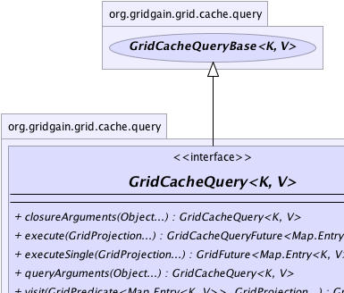
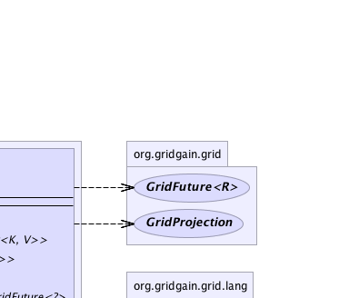
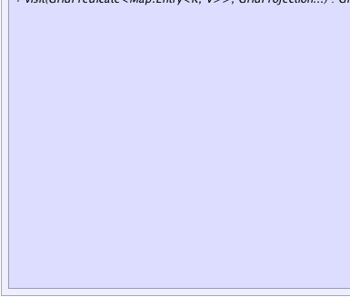
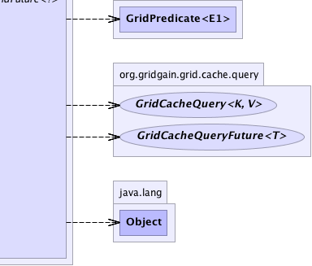

|
|

|

|
|

|

|

|
GridGain™ 3.6.0c
Community Edition |
|||||||||
| PREV CLASS NEXT CLASS | FRAMES NO FRAMES | |||||||||
| SUMMARY: NESTED | FIELD | CONSTR | METHOD | DETAIL: FIELD | CONSTR | METHOD | |||||||||
public interface GridCacheQuery<K,V>
API for creating cache queries. The queries are executed as follows:
GridCacheQueryType.SCAN query type, each node will execute the received query
against index tables to retrieve the keys of the values in the result set. In SCAN mode this
step is redundant.
GridCacheQueryBase.remoteKeyFilter(GridClosure)
method, then each returned key will be evaluated against the provided key filter.
read-through flag is enabled, then all values that are null
(possible if 'invalidation' mode is set to true) will be loaded
from the persistent store, otherwise only values that are available in memory will
be returned.
GridCacheQueryBase.remoteValueFilter(GridClosure) method,
all retrieved values will be evaluated against the provided value filter.
GridCacheQuery.visit(GridPredicate,GridProjection...) method, then
a small acknowledgement message is sent back, otherwise the resulting key-value pairs
will be sent back to requesting node one page at a time.
GridCacheQueryBase.keepAll(boolean)
flag is set to false, then the received page will be immediately discarded after it has been
returned to user. In this case, the GridFuture.get() method will always return
only the last page. If GridCacheQueryBase.keepAll(boolean) flag is true, then all query result pages
will be accumulated in memory and the full query result will be returned to user.
GridCacheQueryType.SQL query type allows to execute distributed cache
queries using standard SQL syntax. All values participating in where clauses
or joins must be annotated with GridCacheQuerySqlField annotation.
There are almost no restrictions as to which SQL syntax can be used. All inner, outer, or
full joins are supported, as well as rich set of SQL grammar and functions. GridGain relies on
H2 SQL Engine for SQL compilation and indexing. For full set of supported
Numeric, String, and Date/Time SQL functions please refer
to H2 Functions documentation
directly. For full set of supported SQL syntax refer to
H2 SQL Select Grammar.
Note that whenever using 'group by' queries, only individual page results will be
sorted and not the full result sets. However, if a single node is queried, then the result
set will be quite accurate.
GridCacheQueryType.LUCENE and
GridCacheQueryType.H2TEXT. All fields that are expected to show up in text
query results must be annotated with GridCacheQueryLuceneField or
GridCacheQueryH2TextField accordingly. The Lucene based text search
utilizes Apache Lucene internally for text indexing, and the H2 TEXT
search stores text indexes in special H2 index tables.
GridCacheQueryType.SCAN
query type may be used. With this query type GridGain will iterate over all cache
entries, skipping over the entries that don't pass the optionally provided key or value filters
(see @link #remoteKeyFilter(GridOutClosure)} or GridCacheQueryBase.remoteValueFilter(GridClosure) methods).
In this mode the query clause should not be provided.
GridCacheQuery.visit(GridPredicate,GridProjection...) method. With this method, all the logic is performed
inside of query predicate directly on the queried nodes. If the predicate will return false
while visiting, then visiting will finish immediately.
GridCacheQueryBase.remoteKeyFilter(GridClosure)
and GridCacheQueryBase.remoteValueFilter(GridClosure) methods. These additional filters
are useful whenever filtering is based on logic or methods not available in SQL
or TEXT queries. For 'SCAN' queries this filters should be usually provided
as they are used directly to filter the query results during full scan.
GridCacheQueryFuture implements Iterable interface directly and
therefore can be used in regular iterator or foreach loops. The iterator will
immediately return all query results that are currently available and will block on page
boundaries, whenever the next page is not available yet. Whenever the full result set is
needed as a collection, then GridCacheQueryBase.keepAll(boolean) flag should be set to true
and any of the future's get(..) methods should be called.
'Employee' and 'Organization'
classes defined as follows:
public class Organization {
@GridCacheQuerySqlField(unique = true)
private long id;
@GridCacheQuerySqlField
private String name;
...
}
public class Person {
// Unique index.
@GridCacheQuerySqlField(unique=true)
private long id;
@GridCacheQuerySqlField
private long orgId; // Organization ID.
// Not indexed.
private String name;
// Non-unique index.
@GridCacheQuerySqlField
private double salary;
// Index for text search.
@GridCacheQueryLuceneField
private String resume;
...
}
Then you can create and execute queries that check various salary ranges like so:
GridCache<Long, Person> cache = G.grid().cache();
...
// Create query which selects salaries based on range for all employees
// that work for a certain company.
GridCacheQuery<Long, Person> qry = cache.createQuery(SQL, Person.class,
"from Person, Organization where Person.orgId = Organization.id " +
"and Organization.name = ? and Person.salary > ? and Person.salary <= ?");
// Query all nodes to find all cached GridGain employees
// with salaries less than 1000.
qry.queryArguments("GridGain", 0, 1000).execute(grid);
// Query only remote nodes to find all remotely cached GridGain employees
// with salaries greater than 1000 and less than 2000.
qry.queryArguments("GridGain", 1000, 2000).execute(grid.remoteProjection());
// Query local node only to find all locally cached GridGain employees
// with salaries greater than 2000.
qry.queryArguments(2000, Integer.MAX_VALUE).execute(grid.localNode());
Here is a possible query that will use Lucene text search to scan all resumes to
check if employees have Master degree:
GridCacheQuery<Long, Person> mastersQry = cache.createQuery(LUCENE, Person.class, "Master"); // Query all cache nodes. mastersQry.execute(grid.localNode()));
| Wiki | |
| Forum |
|  |  |
|  |  |
| Field Summary |
|---|
| Fields inherited from interface org.gridgain.grid.cache.query.GridCacheQueryBase |
|---|
DFLT_PAGE_SIZE |
| Method Summary | |
|---|---|
GridCacheQuery<K,V> |
closureArguments(Object... args)
Optional arguments for closures to be used by GridCacheQueryBase.remoteKeyFilter(GridClosure),
and GridCacheQueryBase.remoteValueFilter(GridClosure). |
GridCacheQueryFuture<Map.Entry<K,V>> |
execute(GridProjection... grid)
Executes the query and returns the query future. |
GridFuture<Map.Entry<K,V>> |
executeSingle(GridProjection... grid)
Executes the query and returns the first result in the result set. |
GridCacheQuery<K,V> |
queryArguments(Object... args)
Optional query arguments that get passed into query SQL. |
GridFuture<?> |
visit(GridPredicate<Map.Entry<K,V>> vis,
GridProjection... grid)
Visits every entry from query result on every queried node for as long as the visitor predicate returns true. |
| Methods inherited from interface org.gridgain.grid.cache.query.GridCacheQueryBase |
|---|
className, className, clause, clause, enableDedup, enableDedup, id, includeBackups, includeBackups, keepAll, keepAll, metrics, pageSize, pageSize, readThrough, readThrough, remoteKeyFilter, remoteValueFilter, timeout, timeout, type |
| Methods inherited from interface org.gridgain.grid.GridMetadataAware |
|---|
addMeta, addMetaIfAbsent, addMetaIfAbsent, allMeta, copyMeta, copyMeta, hasMeta, hasMeta, meta, putMetaIfAbsent, putMetaIfAbsent, removeMeta, removeMeta, replaceMeta |
| Methods inherited from interface java.io.Closeable |
|---|
close |
| Method Detail |
|---|
GridCacheQuery<K,V> queryArguments(@Nullable Object... args)
args - Optional query arguments.
GridCacheQuery<K,V> closureArguments(@Nullable Object... args)
GridCacheQueryBase.remoteKeyFilter(GridClosure),
and GridCacheQueryBase.remoteValueFilter(GridClosure).
args - Optional query arguments.
@GridEnterpriseFeature(value="Distributed queries are enterprise-only feature (local queries are available in community edition)") GridFuture<Map.Entry<K,V>> executeSingle(GridProjection... grid)
Note that if the passed in grid projection is a local node, then query will be executed locally without distribution to other nodes.
Also note that query state cannot be changed (clause, timeout etc.) if this method was called at least once.
grid - Optional subgrid projection to execute this query on
(if not provided, then the whole grid is used).
@GridEnterpriseFeature(value="Distributed queries are enterprise-only feature (local queries are available in community edition)") GridCacheQueryFuture<Map.Entry<K,V>> execute(GridProjection... grid)
'get(..)' methods on the returned future. If
GridCacheQueryBase.keepAll(boolean) flag is set to false, then 'get(..)'
methods will only return the last page received, otherwise all pages will be
accumulated and returned to user as a collection.
Note that if the passed in grid projection is a local node, then query will be executed locally without distribution to other nodes.
Also note that query state cannot be changed (clause, timeout etc.), except arguments, if this method was called at least once.
grid - Optional subgrid projection to execute this query on
(if not provided, then the whole grid is used).
@GridEnterpriseFeature(value="Distributed queries are enterprise-only feature (local queries are available in community edition)") GridFuture<?> visit(GridPredicate<Map.Entry<K,V>> vis, GridProjection... grid)
true. Once the predicate returns false
or all entries in query result have been visited, the visiting process stops.
Note that if the passed in grid projection is a local node, then query will be executed locally without distribution to other nodes.
Also note that query state cannot be changed (clause, timeout etc.), except arguments, if this method was called at least once.
vis - Visitor predicate.grid - Optional subgrid projection to execute this query on
(if not provided, then the whole grid is used).
|
GridGain™ 3.6.0c
Community Edition |
|||||||||
| PREV CLASS NEXT CLASS | FRAMES NO FRAMES | |||||||||
| SUMMARY: NESTED | FIELD | CONSTR | METHOD | DETAIL: FIELD | CONSTR | METHOD | |||||||||
|
GridGain - Real Time Big Data
|
|
|
|